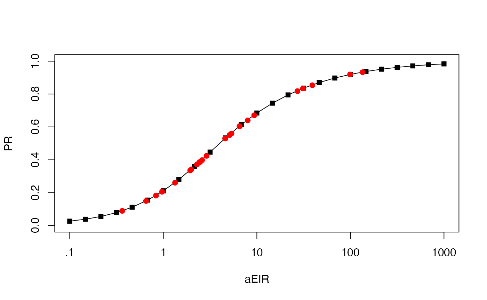
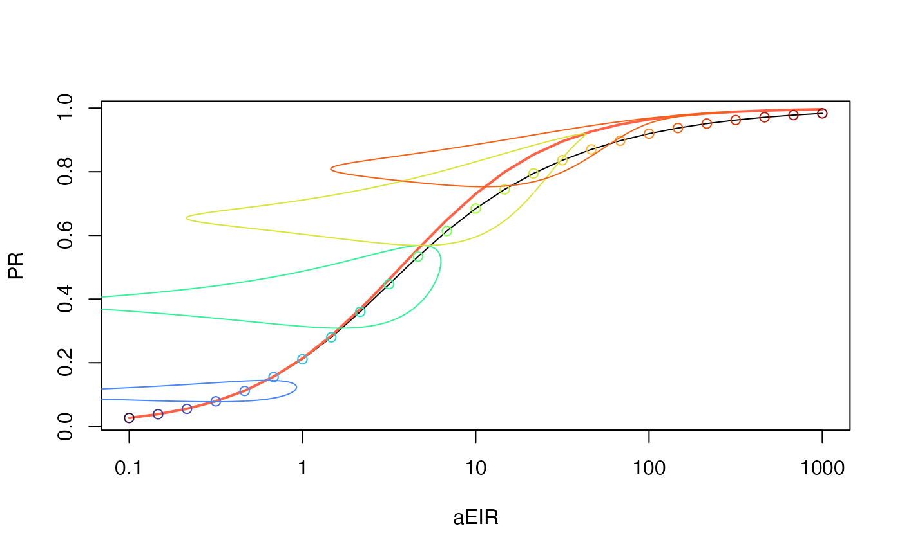
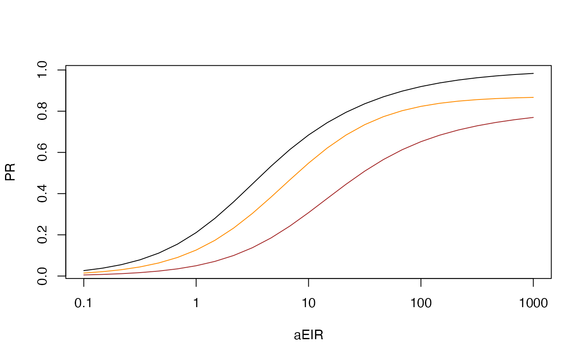
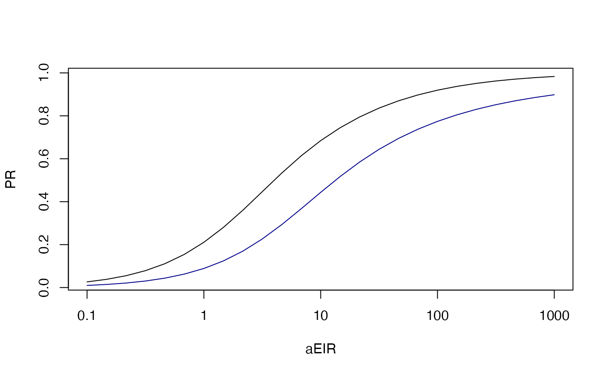
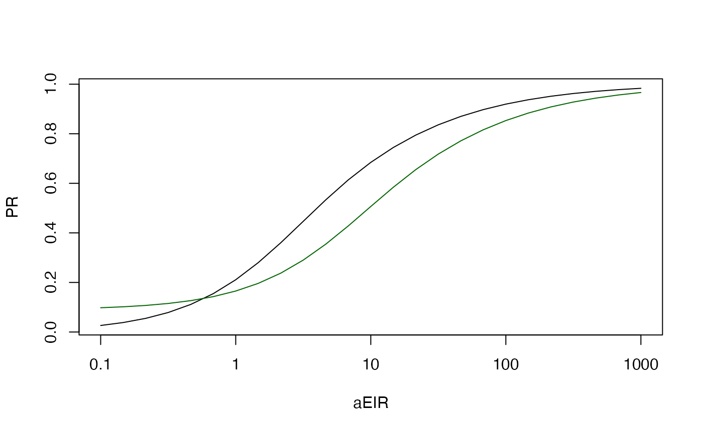

Scaling for Malaria Metrics
July 18, 2024
Scaling.RmdLoad the required packages:
suppressMessages(library(ramp.xds))
suppressMessages(library(deSolve))
suppressMessages(library(rootSolve))
suppressMessages(library(ramp.work))xde
The function xde_scaling() defines the relationship
between the EIR and the PR, and it outputs stable orbits for each value
of aEIR in a mesh from \(10^{-1}\) up
to \(10^{3}\) The code is in
mob_library/Work Do we need two versions?
The cohort trace functions in ramp.xds take the form of
F(a, bday=0, scale=1).
F_eir = function(a, bday=0, scale=1){scale*(1.01 + sin(2*pi*(a+bday)/365))}
scl = integrate(F_eir, 0, 365)$value
make_F_eir = function(F_eir, bday, scale){return(function(a, scl=1){scl*F_eir(a, bday, scale)})}
F_eir1 = make_F_eir(F_eir, 0, 1/scl)
integrate(F_eir1, 0, 365, scl=2.3)$value## [1] 2.3
xde_setup_cohort(F_eir) -> sis
xde_solve(sis) -> sis
tt = seq(0:365)
p1 = list()
p1$eirScale = 1
plot(tt, F_eir(tt, scale=5), type = "l", xlab = "time (days)", ylab = expression(F[eir](t)))
lines(tt, F_eir(tt, scale=2))
lines(tt, F_eir(tt))
lines(tt, F_eir(tt, scale = 1/2)) 
xde_setup_cohort(F_eir) -> sis
xde_scaling_eir(sis, 25) -> sis
plot_eirpr(sis)
## Loading required package: viridis## Loading required package: viridisLite
clrs = turbo(25)
plot_eirpr(sis)
with(sis$output$eirpr,{
points(aeir, pr, col = clrs)
lines(scaling[[5]]$aeir, scaling[[5]]$pr, col = clrs[5])
lines(scaling[[10]]$aeir, scaling[[10]]$pr, col = clrs[10])
lines(scaling[[15]]$aeir, scaling[[15]]$pr, col = clrs[15])
lines(scaling[[20]]$aeir, scaling[[20]]$pr, col = clrs[20])
})
xde_pr2eir()
Since xde_scaling defines the relationship between the
EIR and the PR, we can now run xde_pr2eir() to get the
predicted value of the eir, for any given value of the pr. The code is
in mob_library/Work
We can run this for 50 randomly chosen values of the PfPR.
preir_i = xde_pr2eir(c(0.001, runif(25, 0, 1), 0.999), sis)The function flags any values that are outside of the acceptable range. This may not seem important for the SIS model, but the range of other models can be bounded, so we don’t want to return nonsense values.
preir_i$errors## pr1 pr2 pr3
## 0.001000000 0.007399441 0.999000000We can plot the others:
plot_eirpr(sis)
with(sis$outputs$eirpr, points(aeir, pr, pch = 15))
with(preir_i, points(365*eir, pr, pch = 19, col = "red"))
split_stratum()
In ~/mob_library/Stratification.Rmd we define the S3
function split_stratum_by_biting. Here, we use it to split
a population into
sis2 = split_stratum_by_biting(sis, 1, 1, .2, sqrt(10))
sis2 = split_stratum_by_biting(sis, 1, 1, .5, 1/sqrt(10))
sis2 <- xde_solve(sis2)
xde_scaling_eir(sis2, 25) -> sis2The shift mainly reflects the fact that 80% of the population is getting exposed at a lower level.
\(\oplus\)
To do
Codify the plotting protocols for \(\cal X\)Write SIP plotting protocols &
split_stratumGet SIP up and running
Seasonality
F_eir0 = function(a, bday=0, scale=1){scale*(0*a+1)}
sis0 = xde_setup_cohort(F_eir0)
xde_scaling_eir(sis0, 25) -> sis0
clrs = turbo(25)
with(sis$outputs$eirpr, plot(aeir, pr, type = "l", log = "x", xaxt= "n", xlab = "aEIR", ylab = "PR"))
axis(1, 10^(-1:3), c(0.1, 1, 10, 100, 1000))
lines(sis0$outputs$eirpr$aeir, sis0$outputs$eirpr$pr, col = "tomato", lwd=2)
with(sis$outputs$eirpr, points(aeir, pr, col = clrs))
with(sis$outputs$eirpr, lines(scaling[[5]]$aeir, scaling[[5]]$pr, col = clrs[5]))
with(sis$outputs$eirpr, lines(scaling[[10]]$aeir, scaling[[10]]$pr, col = clrs[10]))
with(sis$outputs$eirpr, lines(scaling[[15]]$aeir, scaling[[15]]$pr, col = clrs[15]))
with(sis$outputs$eirpr, lines(scaling[[20]]$aeir, scaling[[20]]$pr, col = clrs[20]))
Drug taking
sip = xde_setup_cohort(F_eir0, Xname = "SIP")
sip$Xpar[[1]]$eta = 1/40
xde_scaling_eir(sip, 25) -> sip
sip1 = xde_setup_exposure_nb(sip, 1/50)
xde_scaling_eir(sip1, 25) -> sip1
with(sis$outputs$eirpr, plot(aeir, pr, type = "l", log = "x", xaxt= "n", xlab = "aEIR", ylab = "PR"))
axis(1, 10^(-1:3), c(0.1, 1, 10, 100, 1000))
with(sip$outputs$eirpr, lines(aeir, pr, col = "darkorange"))
with(sip1$outputs$eirpr, lines(aeir, pr, col = "brown"))
Heterogeneity
#sis3 <- xde_setup_exposure_nb(sis2, 1/50)
sis4 <- xde_setup_exposure_nb(sis, 1/50)
#xde_scaling_eir(sis3, 25) -> sis3
xde_scaling_eir(sis4, 25) -> sis4
with(sis$outputs$eirpr, plot(aeir, pr, type = "l", log = "x", xaxt= "n", xlab = "aEIR", ylab = "PR"))
axis(1, 10^(-1:3), c(0.1, 1, 10, 100, 1000))
#with(sis2$outputs$eir, lines(aeir, pr, col = "blue"))
#with(sis3$outputs$eir, lines(aeir, pr, col = "purple"))
with(sis4$outputs$eir, lines(aeir, pr, col = "darkblue"))
travel
sis5 <- setup_travel_foi(sis, delta_scale = 1/5/365)
xde_scaling_eir(sis5, 25) -> sis5
with(sis$outputs$eirpr, plot(aeir, pr, type = "l", log = "x", xaxt= "n", xlab = "aEIR", ylab = "PR"))
axis(1, 10^(-1:3), c(0.1, 1, 10, 100, 1000))
with(sis5$outputs$eir, lines(aeir, pr, col = "darkgreen")) 